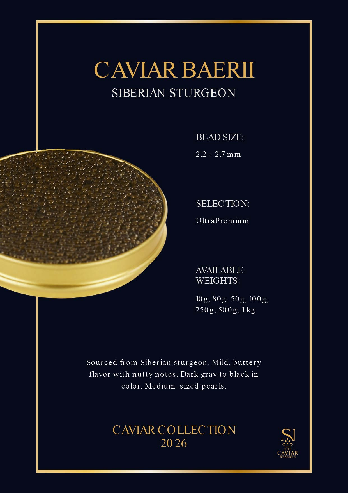
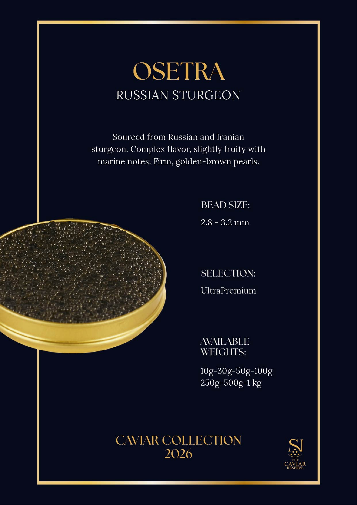
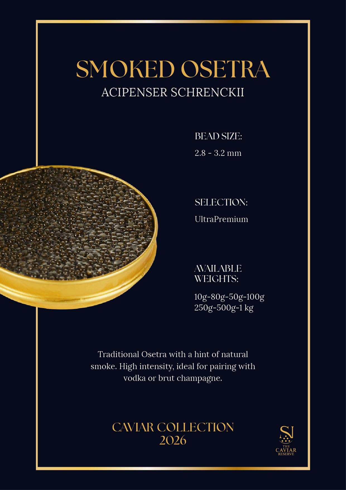
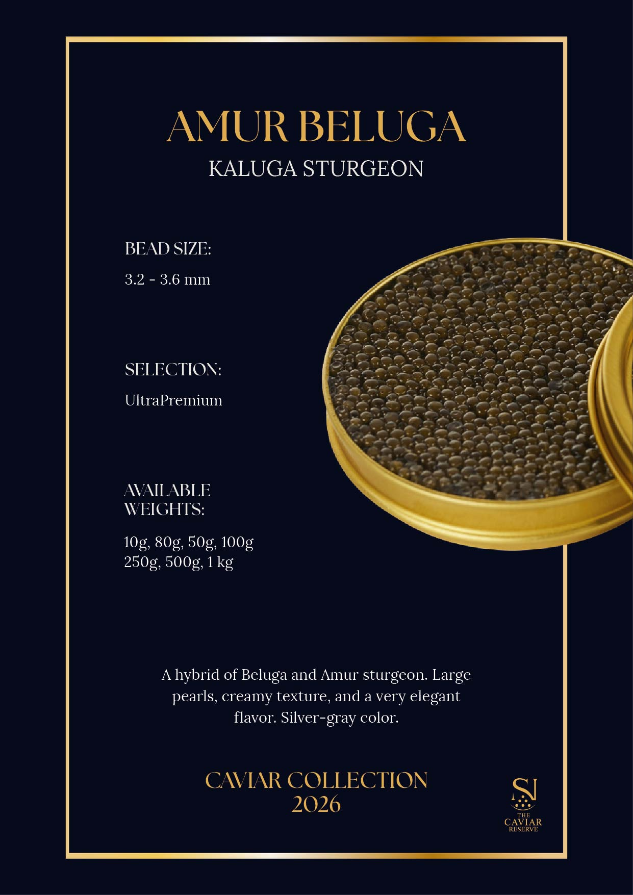
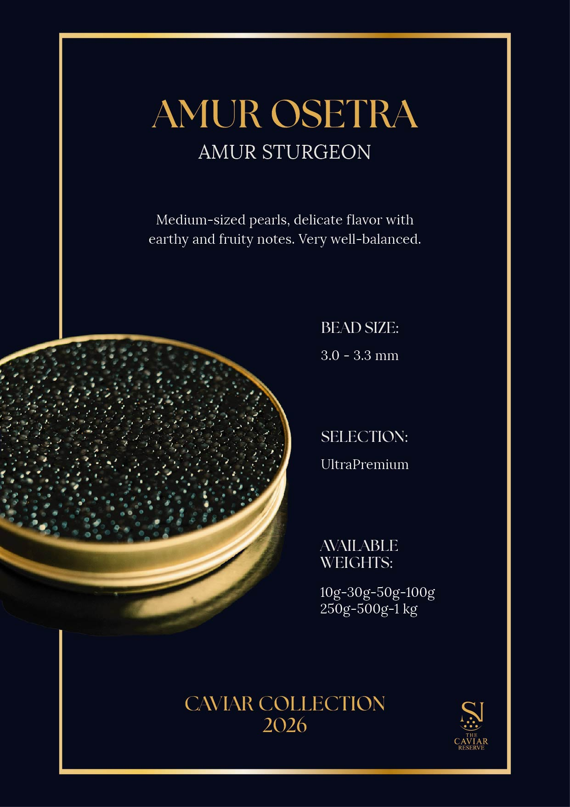
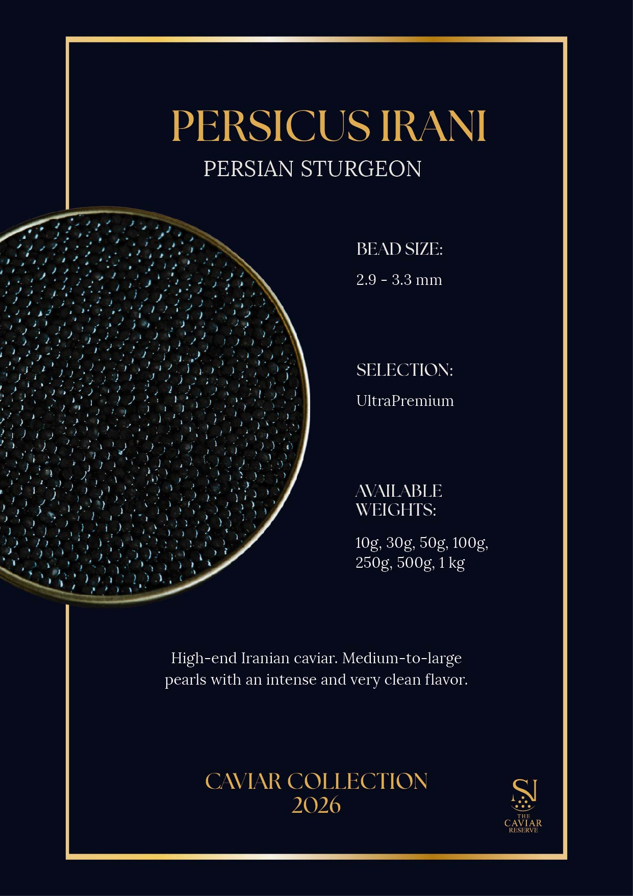
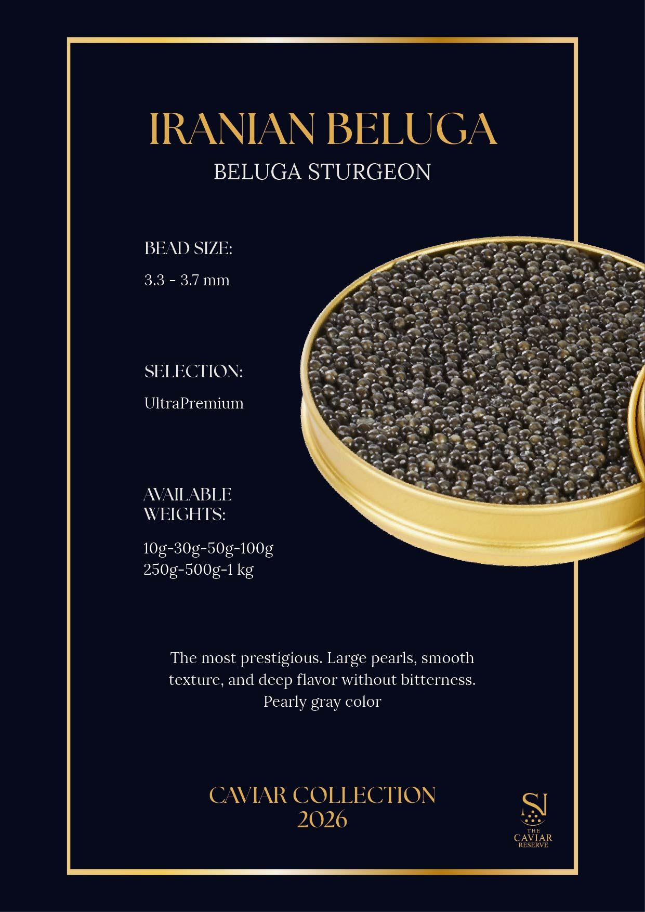
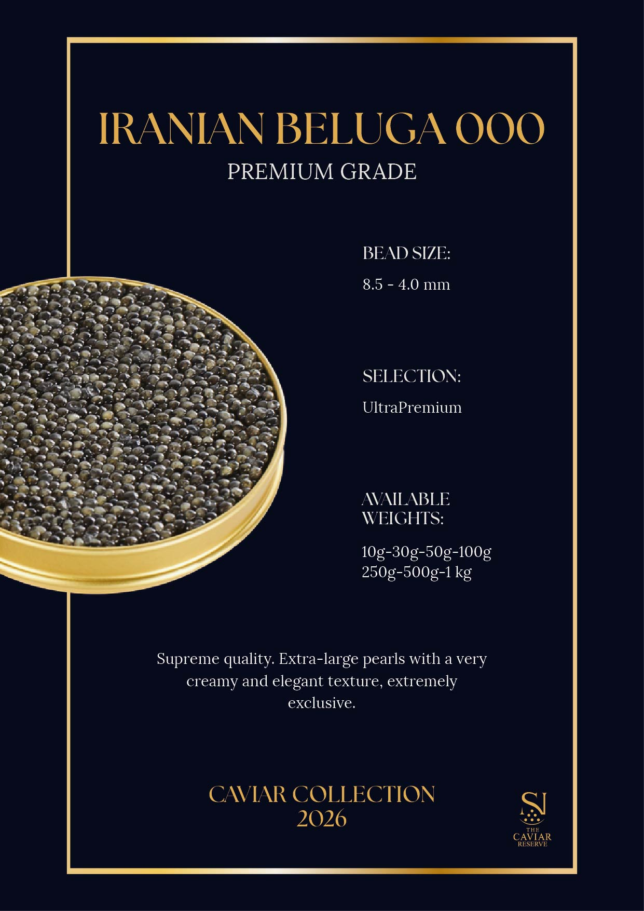
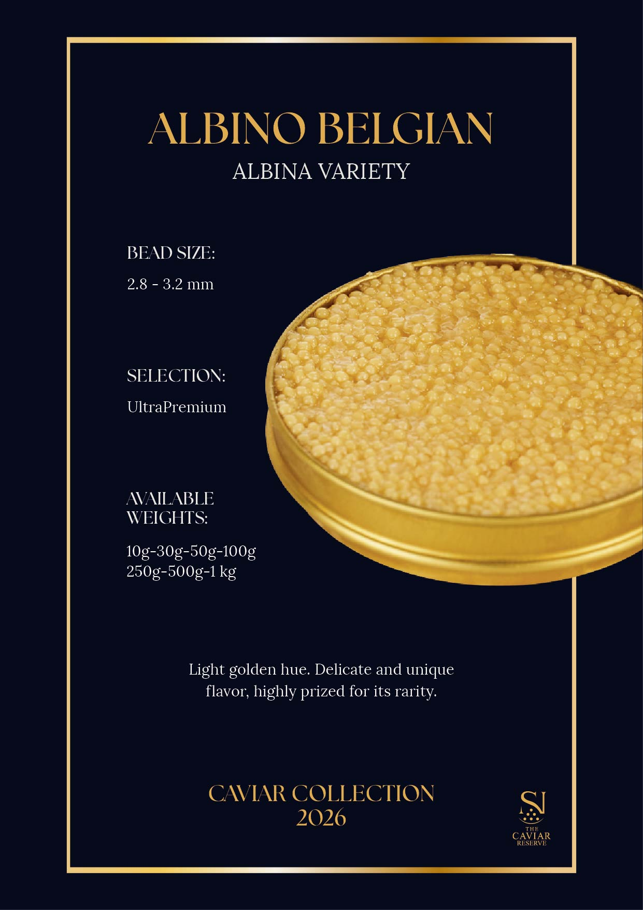

Acipenser baerii · Siberia
Caviar Baerii
Sabor suave y mantecoso con notas de fruto seco. Grano de gris oscuro a negro, de tamaño medio.
- Calibre
- 2.2 – 2.7 mm
- Selección
- UltraPremium
- Formatos
- 10 · 50 · 80 · 100 · 250 · 500 g · 1 kg
Casa fundada en 1987 · Selección UltraPremium
Del Baerii siberiano al Beluga iraní 000, cada lata de The Caviar Reserve lleva su propia ficha técnica: calibre del grano, procedencia y perfil de sabor. Nada se generaliza; cada esturión tiene su carácter.
Variedades activas en catálogo, cada una con lote propio
Rango de calibre de grano en milímetros, según origen
Cadena de frío certificada, del productor a su mesa
La colección 2026
No mostramos precios en catálogo: cada pedido se cotiza según lote, calibre disponible y destino. Consulte disponibilidad directamente con nuestra bodega.

Acipenser baerii · Siberia
Sabor suave y mantecoso con notas de fruto seco. Grano de gris oscuro a negro, de tamaño medio.

Esturión ruso · Rusia e Irán
Sabor complejo, ligeramente afrutado con notas marinas. Grano firme, de color dorado-marrón.

Acipenser schrenckii · Ahumado
Osetra tradicional con un toque de ahumado natural. Intensidad alta, ideal con vodka o champagne brut.

Esturión Kaluga · Río Amur
Híbrido de Beluga y esturión Amur. Grano grande, textura cremosa y sabor muy elegante. Color gris plateado.

Esturión del Amur · Río Amur
Grano de tamaño medio, sabor delicado con notas terrosas y afrutadas. Muy equilibrado.

Esturión persa · Irán
Caviar iraní de alta gama. Grano de tamaño medio a grande, con un sabor intenso y muy limpio.

Esturión Beluga · Irán
El más prestigioso. Grano grande, textura suave y sabor profundo sin amargor. Color gris nacarado.

Grado Premium · Edición 000
Calidad suprema. Grano extra grande, de textura muy cremosa y elegante. Extremadamente exclusivo.

Variedad Albina · Acuicultura europea
Tono dorado claro. Sabor delicado y singular, muy apreciado por su rareza.
Nuestra tradición
Desde las profundidades del Caspio y el Amur hasta las mesas de los restaurantes más exigentes del mundo, The Caviar Reserve es sinónimo de autenticidad, precisión y trazabilidad completa.
Nuestros sommeliers seleccionan la cuvée exacta para cada variedad: desde un blanc de blancs mineral hasta un brut de guarda prolongada.
Presentes en las cocinas de restaurantes de referencia en cuatro continentes, con lotes reservados y trazabilidad por partida.
Organizamos degustaciones en localizaciones privadas —yates, bodegas, residencias— con protocolo de servicio y temperatura controlada.
Trabajamos junto a equipos de cocina para adaptar calibre, salinidad y formato a cada carta y cada momento del servicio.
“El caviar no es un lujo — es la expresión más pura de la generosidad del océano.” — Jacques Martel, Chef · 3 Estrellas Michelin
Voces de distinción
He probado caviares de todas las latitudes, pero el Iranian Beluga de The Caviar Reserve tiene una profundidad y una finura que no había encontrado antes.
Para nuestras cenas en bodega, el Amur Osetra es el acompañamiento perfecto. Elegancia y complejidad en cada grano.
El Albino Belgian es pureza absoluta. Un producto que habla por sí mismo, sin necesidad de adornos.
Contacto directo
Indíquenos la variedad, el formato y el destino. Le responderemos con disponibilidad, calibre del lote actual y condiciones de envío en frío.